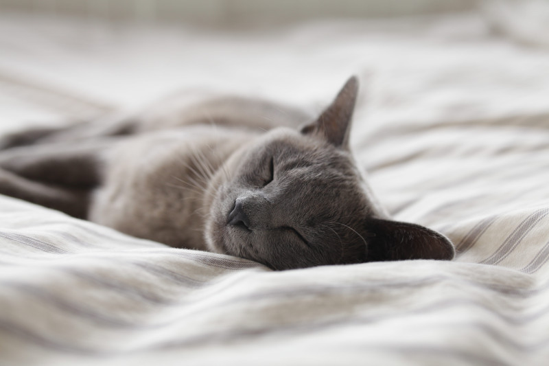
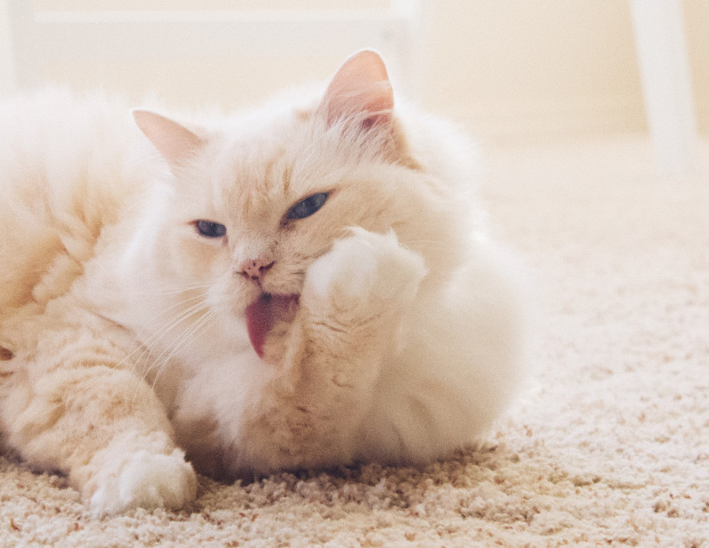
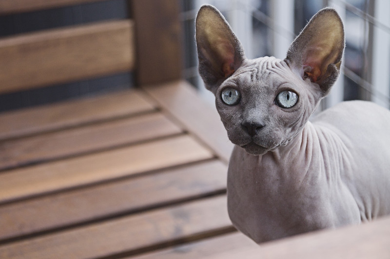

Welcome!
Here you will find everything you want to know about cats!
General info
- Lifespan: 2 – 16 years (In the wild)
- Gestation period: 58 – 67 days
- Daily sleep: 12 – 16 hours
- Mass: 3.6 – 4.5 kg (Adult)
- Scientific name: Felis catus
- Length: 46 cm (Without Tail)
Did you know that?
- The oldest cat in the world was 38 years old!
- Cats spend 70% of their lives sleeping
- 
- Cats can't taste sweets
- Cats spend between 30 to 50 percent of their day grooming themselves
- 
- Purring doesn't always mean a cat is happy
- Cats first went to space in 1963
- Cats don't always land on their feet
- The record for the longest cat ever is 48.5 inches
- A house cat can reach speeds of up to 30mph
- Not all cats have fur
- 
- Not all cats hate water